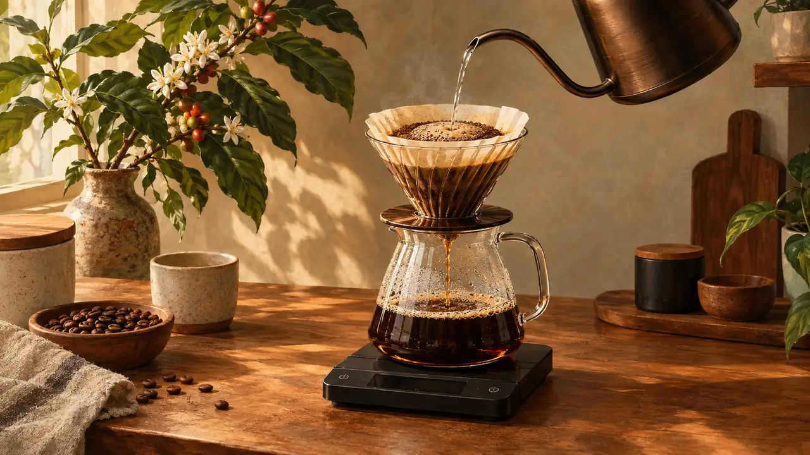

Extraction et préparation
Préparer un café, c’est dissoudre une partie des composés du grain. La norme « Golden Cup » donne des repères mesurables pour le café filtre.
L’essentiel en trois points
Approfondir
Touchez un titre pour ouvrir ou fermer la rubrique.
La norme Golden Cup
Eau et ratio
Limites de la norme
Les deux plages 1,15–1,35 % et 18–22 % sont réelles, mais viennent d’un article de 1957 et décrivent le café filtre ; elles ne couvrent pas l’espresso [2].
Mouture
La taille de mouture influe sur la vitesse d’extraction, par la surface de contact, et sur la vitesse d’écoulement de l’eau à travers le lit de café [3]. Le diagnostic du goût, l’espresso, le piston et le moka sont détaillés dans les sections suivantes.
Diagnostiquer une tasse : acide ou amère ?
Des essais sensoriels de l’UC Davis Coffee Center, avec des dégustateurs entraînés, ont fait varier la force (TDS) et le rendement d’extraction (PE) du café filtre. Résultats : l’amertume augmente avec la force et avec le rendement (mesure faite sur une torréfaction moyenne) ; l’acidité (sourness) augmente avec la force mais diminue quand le rendement augmente ; la douceur naturelle diminue avec la force et avec le rendement [5].
Lecture pratique : une tasse très acide correspond plutôt à un faible rendement, une tasse très amère à un rendement élevé. Ce sont des tendances statistiques sur des échantillons contrôlés, pas des règles pour une tasse isolée. Les auteurs notent que la carte classique de Lockhart (1957) ne retient que deux attributs, « amer » et « sous-développé », et qu’elle mélange description du goût et préférence des consommateurs [5].
Espresso : repères et pratiques
La définition historique de la SCAA, republiée par la SCA, décrit un espresso de 25 à 35 ml préparé avec 7 à 9 g de café (14 à 18 g pour un double), une eau à 90,5–96,1 °C, une pression de 9 à 10 atmosphères et une mouture telle que le temps d’extraction soit de 20 à 30 secondes [6].
Une enquête 2017 de la Barista Guild of America auprès de baristas du monde entier décrit les pratiques réelles : ratio moyen de 1:2 (de 1:1,5 à 1:2,5), environ 36,5 g de boisson pour 18 à 20 g de café, 25 à 30 secondes pour 51 % des répondants, 9 bars pour la réponse la plus fréquente [6]. Ce sont des pratiques déclarées, pas une norme : le café filtre et l’espresso n’obéissent pas aux mêmes repères (voir « Limites de la norme »).
Piston (cafetière à immersion)
Le piston est une extraction par immersion : le café et l’eau infusent ensemble avant que le filtre à piston retienne le marc [7]. Le module de formation ROCC (SCA Training) propose un ratio de 1:15 (par exemple 26 g de café pour 400 ml d’eau, ou 55 g pour 950 ml), une cafetière rincée et préchauffée, un tiers de l’eau versé d’abord pour mouiller tout le café, puis le reste, 4 minutes d’attente et une pression lente du piston [7]. C’est une recette d’un formateur, pas une norme : le ratio de 1:15 diffère du repère de 1:18 cité pour le filtre.
Moka (cafetière italienne)
Selon Bialetti, le moka utilise la pression de la vapeur : l’eau de la chambre basse, chauffée, est poussée à travers le café puis monte dans la colonne jusqu’au collecteur supérieur ; le grésillement final signale que l’eau est presque épuisée [8]. Le fabricant indique une pression d’environ 1,5 bar, contre au moins 9 bars pour une machine espresso, ce qui explique une boisson différente [8].
Conseils du fabricant : eau à température ambiante, plutôt peu dure (calcaire), mouture plus grosse que pour l’espresso, feu doux [8]. Ces conseils viennent d’un fabricant, pas d’une étude indépendante.
Image : illustration générée pour le site, à valeur éditoriale, pas un document photographique.
Termes du dictionnaire
Références
Les affirmations renvoient aux références numérotées ci-dessous, avec leur date de consultation. Les rubriques marquées « à documenter » n’ont pas encore de source vérifiée et n’affirment rien. Certaines sources sont secondaires : leur nature est indiquée dans leur intitulé.
- Roastopedia, The Golden Cup Standard (synthèse de la norme SCAA/SCA) · consulté le 20 novembre 2026
- Beans & Barista, « SCA Golden Cup Standard: what it really says » · consulté le 20 novembre 2026
- SCA Training (ROCC), module Brewing Foundation : Golden Cup, ratio eau/café · consulté le 20 novembre 2026
- Talk About Coffee, ratios usuels en pesée (reprise secondaire de repères SCA) · consulté le 20 novembre 2026
- SCA 25 Magazine, S. Frost, M. Batali, J.-X. Guinard, W. Ristenpart (UC Davis Coffee Center), « Towards a New Brewing Chart » · consulté le 20 novembre 2026
- SCA 25 Magazine n° 3 (1er février 2018), D. Fasman, « Defining the Ever-Changing Espresso » (enquête Barista Guild of America 2017) · consulté le 20 novembre 2026
- ROCC (SCA Training), « How to Brew a Great French Press in 10 Easy Steps » (4 novembre 2020) · consulté le 20 novembre 2026
- Bialetti (fabricant), « How the Moka works » · consulté le 20 novembre 2026